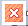

Report Template Editor GUI¶
To open the GUI, select the submenu Report Template Edit from PY_Tools main menu of VCollab Pro or ProX.
GUI¶

COMMAND LIST: Current list of commands in the template. User can Add, Modify, Run or Save these commands.
ENTER COMMANDS: User can define a new command in this text field. This command can be added to the command list.
ARGUMENT LIST: When user enter a valid command, a list of parameters that can be specified for the command will be displayed in this text box.
Menu¶
 File Open: Select a report template file (A file selection dialog will popup). The commands from this file will be added to the Command List. Use Run Command option in the popup dialog to create the report.
File Open: Select a report template file (A file selection dialog will popup). The commands from this file will be added to the Command List. Use Run Command option in the popup dialog to create the report. Save File: Save all commands defined in the Command List as a report template file.
Save File: Save all commands defined in the Command List as a report template file. Run Commands: Run all commands in the Command List.
Run Commands: Run all commands in the Command List. Apply to VP: Run all commands for each selected ViewPoints and update ViewPoint. A dialog will popup to select ViewPoints.
Apply to VP: Run all commands for each selected ViewPoints and update ViewPoint. A dialog will popup to select ViewPoints.
 Edit Commands: This is a toggle button. When green, user can directly edit the commands in the Command List.
Edit Commands: This is a toggle button. When green, user can directly edit the commands in the Command List. Clear All: Clear all commands from the Command List.
Clear All: Clear all commands from the Command List. Exit: Close this dialog and exit.
 Help: Show this help message in a browser tab.
Help: Show this help message in a browser tab.Add Command: Click the button(icon) to add the specified command from Enter Commands field.
Note
If Run Command checkbox is selected, this command will also be executed.
 Reset: Clear ‘Enter Commands’ text field.
Reset: Clear ‘Enter Commands’ text field.Command List: Select a command from the list of all commands in a tree view (Select Commands Dialog).

Example¶
Here is a sample command template file:
VIEWPATH,CAE Report#=> Set Viewpath for the report
IMAGE_VP,N,VC_ColorBG.png#=> Set image background for all viewpoints
SET_Font,NOTE,12,Arial Bold,92,92,92,255,255,240,0 #=> Set font for all 2D text labels
PARTS_SHOW,ALL#=> Display all parts
CAMERA_VIEW, 1.0, 1.0, 1.0,0.0,0.0,1.0#=> (direction dx,dy,dz , up vector ux,uy,uz)
FIT_VIEW, 0.1#=> Fit model and zoom out
#Set display parameters for next viewpoint
DEL_ENTITY,XY,LABEL,SYMBOL,PROBE#=>Delete all existing label and xyplotdisplays
SET_DISPLAY,COLOR=Y,LEGEND=Y,DEFORM=Y,DMODE=0#=> Set model display settings for next viewpoint
#-Create specific views
MODAL_VPS,5,Y#=> If Modal data create Modal views else create hotspot views for each result
#Save Report
CUR_FOLDER,CAX#=> Set current folder to CAX file folder. Used for next Save commands
#SAVE, CAX#=> Save CAX file
#SAVE,HTML#==> Save html file
EXIT#=> Quit command processing
Note
Commands will be excecuted line by line. Any text after ‘#’ is a comment.